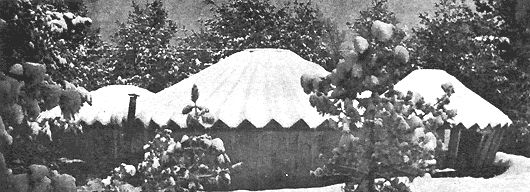
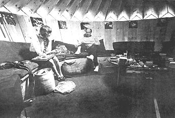
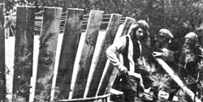
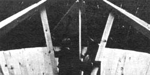

A modern version of the age-old yurt is popping up all over the country like some friendly toadstool these days and a fellow name of Bill Coperthwaite in Bucks Harbor, Maine is responsible. The following article, by Bill himself, tells how-somewhere between California and Sweden-his contemporary ger came about.
The yurt has its origins in the folk wisdom of the ancient nomads of inner Asia. There, the prototype has withstood the fierce cold, the violent winds and the intense heat of the steppes for thousands of years. The traditional yurt, made of light poles and covered with thick felt, was a portable structure which the nomads carried with them in their search for suitable grazing for their herds. It is out of a profound respect for the technical genius of these people that the name yurt was chosen for our contemporary structure.
The nomadic yurt builders appear to be the first people to have used the principle of the tension-band in the support of a dwelling. This advance allowed the roof, or roof-wall, of a structure to be raised above the ground without the use of internal posts or trusswork. This solved a basic architectural problem of eliminating the negative space, space formed by the walls of most tent structures as they meet the ground. The challenge was to have neither negative space, posts nor trusswork blocking the interior of the dwelling. These ancient peoples made an ingenious discovery that, at once, gave to their tent a positive wall angle, a clear inner space, a circular structure to fend off strong winds while permitting less heat loss per unit of volume than other shapes . . . and, still allowed the dwelling to remain portable. The invention was a simple band-made of the hair of yak, camel or goat or wool of the sheep-in the form of several ropes sewn side by side, used to encircle the building at the eaves and take the outward thrust of the roof.
The world has used the tension-band principle for many purposes, chiefly in the construction of lightweight containers (buckets, boxes, barrels and baskets), tubs tankards and silos and-at times-for large masonry domes as in the Levant and ancient Rome. However, only the Central Asian nomad appears to have applied the principle to domestic structures.
My experiments with circular structures stem from an early fascination with the economy of surface-to-area ratio that they offer. This interest served no consciously practical purpose until 1962 when I was teaching at the Meeting School in Rindge, New Hampshire. There, a group of four students were excited about math but had taken all of the courses offered so we agreed to work together exploring the geometry of roof structures. During this time I saw an article in the National Geographic Magazine (March 1962) with pictures of Mongolian yurts. Our immediate response, upon seeing the skeletons of the structures, was that the roof could be changed in a significant way to make a new-and for some purposes, improved-roof. We cut poles in the woods and erected the new roof.
In the spring of 1964, the first complete example of the new yurt design was built at the John Woolman School in Grass Valley, California. It differed from the Mongolian yurt by having a wall that sloped outward at the top and a roof structure that eliminated the heavy, wooden, central ring of the traditional dwelling. This sloped wall gave increased rigidity and strength to the structure, a back rest in the interior and a feeling of greater spaciousness. The dwelling was covered with translucent material allowing the skeleton to be patterned against the sky. A madrone tree shaded the yurt and the shadows of the leaves playing on the roof gave it the appearance of a Japanese painting.
The response of students and others who came in contact with the structure was exciting, More than half the student body volunteered to help build it. The pleasure shown by those who took part made me realize that this was an approach to learning that had great potential.
At this point the yurt was a spacious tent with a complex skeleton of new design. It had not yet solved the problem of providing a simple, inexpensive, permanent dwelling. These problems, without solution, accompanied me on my travels for about a year. Then one day while hiking in Sweden, it occur red to me that-to make a solid walled structure on the yurt plan-it was only necessary to increase the width of each wall and roof member until it overlapped its neighbor. Thus we had a structure that united skin and skeleton. This meant that the interior and exterior wall was erected as one eliminating the skeleton and the perishable tent skin of the past. By cutting the roof boards diagonally, little waste was incurred in making tapered elements.
Upon returning from Sweden we built one of these structures (with a sod roof, in the spring of 1966 in Plaistow, New Hampshire. It is a pleasant dwelling and solved a number of technical problems nicely. However, it was still not simple enough for unskilled people to construct. The problem of simplifying the yurt was taking a lot of time, when suddenly, the next step came clear.
The new yurt design would be based on another geometric concept. Instead of having an hyperbolic-paraboloid curve in its walls, as did all other yurts up until this time, the structure would be conic. It would appear as an immense water bucket with its members tongue and grooved together. The roof would be the same in principle, but a much flatter core
The concept proved sound when we built the first conical yurt , in College, Alaska at the home of Niilo Koponen, in the spring of 1967. It was a delightful structure both to build and to live in. It came closer to the ideal of uniting skin and skeleton from straight wooden members than any structure known to me. It proved easy to erect and three people put up the walls and roof in seven hours. Although I was pleased with the new structure in many ways, I felt that cutting the tongue and groove the tapered boards still required too much skill for the average person.
I continued to analyse the yurt design until, one day, it occurred red to me that there was no need to tongue and groove the boards nor to taper the wall members. I had been limiting my thinking to the structural terms of liquid containers that needed to be forced together with bands to keep them from leaking. But there was no liquid pressure in the yurt. Its outward thrust and stability came from the roof. The walls could be tapered boards, overlapped for ease of nailing, and lapped more the bottom than at the top to produce the sloping wall.
The complicated tongue and grooved, tapered boards of the roof were eliminated by the folded roof that is to be seen on the yurts in the photos that accompany this article. The roof requires power equipment in its construction only for the ripping of the boards. They are then nailed at right angles to one another. This makes both a simpler roof structure and an immensely stronger one as well. A by-product of this design is the ring of triangular windows fitted under the eaves. Although sufficient light comes in through the central skylight, the quality of light entering through the peripheral windows adds greatly to the attractiveness of the structure.
The first yurt of this design was built at the home of Randolph Brown in Westwood, Massachusetts in the fall of 1968. Shortly after this came the opportunity to build the first Harvard yurt which was basically the same structure with some changes in proportion. Used as a study and seminar room in 1968-69, it received more attention than any of the contemporary yurts up until that time, partially due to its location on the Harvard Graduate School of Education campus. The structure's attractiveness, uniqueness and simplicity drew people to it. It was this yurt that prompted the Study-Travel-Community people to build their own school.
The quality of space in the yurt is quite different from that which I have experienced in any other structure. Viewed from the outside the yurt is unimposing. With its low profile, sod covered roof and wall of weathered pine, it blends easily into the natural landscape. The curved form gives as little resistance to the eye as to the wind, adding to the impression of its smallness . . . the yurt seems almost a play house. From outside the possibility of standing erect within is questionable. It is a distinct surprise, upon entering the yurt, to find adequate head room throughout. The illusion is intended. The structure blends with the natural environment and is less dominating, more human in scale . . . yet spacious within. The goal is to promote a feeling of being at home and in harmony with nature.
The space inside a yurt seems much larger than it is. This is due, in part, to the structure being circular with an outward sloping wall which tends to carry the eye with it as it expands. In similar fashion, the roof lines expand radially and meet the wall at a ring of light which helps to carry the eye even further and gives a feeling of still greater spaciousness. The central skylight spreads the illumination evenly throughout and soft light from the peripheral windows adds variety. All of the structural elements described are functionally important and either make the yurt a stronger structure, less expensive or simpler to build. The esthetic qualities of the building are by-products of these elements.
Perhaps the yurt's most satisfying quality is the effect it has had upon the majority of people who have visited it. They are moved to talk not only about the beauty of the enclosed space but also about the space as an environment for group interac tion. Visitors, trying to formulate the difference between this space and others they have known, often become conscious spatial quality for the first time. At a time when visual pollution is so great, it is of extreme importance to develop sensitivity to environmental quality. The yurt seems to aid in this development.
The spatial quality of the contemporary yurt is conducive to discussion. As a seminar room, the structure has the advantage of bringing people into a face to face relationship easily. There is no need to arrange chairs in a circle as in a rectangular room . . . no need to ask people not to sit behind one another. The curved bench echoes the wall, set at a comfortable angle for the back, and places people within pleasant conversation distance. It promotes group process since there is no one place more prominent than the others.
Educationally this building is significant because its design provides people with the opportunity to build something large and important for which they previously have had neither the opportunity nor the experience. The concept of simple structural beauty as a part of the environment is an important one. It gives great satisfaction to participants to find that they can make useful structures that are esthetically pleasing as well.
T he design of this contemporary yurt is the result of ten years' effort to develop techniques that make it possible for children and unskilled adults to participate in a major way in the creation of their own shelter. Taking part in the ordering of an environment means having a better chance of understanding and appreciating that environment. The construction of a yurt allows a person to see the total erection of a building in two or three days' time-(so quickly as to seem like time lapse photography). To see the same thing happen with a normal building in our society takes months and is beyond the attention span of many. Speed of construction also gives more people a feeling of accomplishment before they reach their threshold of discouragement and provides permanent shelter in the shortest possible time.
Yurts of this design have had a wide appeal and, in addition to their use in schools at the present time, they are in service as summer homes on the coast of Maine and Cape Cod; as a mountain shelter, a home, a research station, and as student housing in Alaska; as a home in British Columbia; and as a retreat in a Hawaiian mental hospital. As this is written, a yurt is being built as a sharecropper home in Mississippi, with the aid of students from the Study-Travel-Community School. It's a good project for these students since it is initially attractive and exciting to them while, at the same time, it demands cooperation, creativity and disciplined action.
The Study-Travel-Community School did it... other groups and individuals are too . . . and so can you. Build your very own yurt or yurts and move right in, that is. All you'll need to tell you how is a $3.00 set of plans from Bill Coperthwaite.
It should be noted right in front, now, that your three Iron Men are not buying you reams of highly detailed drawings. Instead, you'll receive a single (23" X 33") sheet of heavy paper bearing-among other information-the following disclaimer:
This plan is not meant to be a complete set of instructions but a guide to the most difficult parts for those who want the adventure of building their own yurt. If you, perchance, get hung up, have a swim and try again with a clearer head.
That tongue-in-cheek line shouldn't scare you off, however, because Bill's yurt design is supersimple and the sheet of plans presents a number of crystal-clear illustrations like the one below. I mean, what the heck. If a 15-year-old kid can do it . . . why not you? Get your yurt recipe from:
Wm. S. Coperthwaite
Bucks Harbor
Maine 04718
October 1, 1970
Bucks Harbor, Maine 04618
An Eskimo museum is being created and unbeknownst to most of you, the money you invested in a Yurt plan was helping to make this project possible.
The museum is a collection of artifacts and films from Eskimo life across the Arctic. It will travel to the Eskimo villages of Alaska with the intention of creating greater knowledge and respect among the Eskimo people for their cultural heritage. This will be a small, mobile museum going from village to village by plane, snowmobile and dog sled.
For the last three years I have been assembling this collection and preparing to take it into the field. This fall it will come about under the sponsorship of the University of Alaska, the Alaska State Museum, the Harvard Graduate School of Education and the newly formed Yurt Foundation.
The Yurt design and the publication of the plan have been so enthusiastically received that two new organizations have been formed.
(1) YURT DESIGNS INC., BOX 183, CAMBRIDGE, MASSACHUSETTS. This is a business organization concerned with the production of yurts and the providing of consultant help for those requesting it.
(2) THE YURT FOUNDATION, BUCKS HARBOR, MAINE. A private non-profit corporation has been set up so that money coming to me from the sale of yurts or yurt plans can be more fully used for educational purposes. The chief concern of the Yurt Foundation will be the collecting of folk knowledge from around the world and the combining of this with contributions from modern knowledge for the purpose of creating a life style which will be simpler and in more intimate contact with the natural world while promoting intellectual and creative fulfillment.
THE FIRST PROJECT
It is a fitting beginning that the first project sponsored by the Yurt Foundation is one concerned with the building of greater respect for their heritage among the Eskimo people. It is out of great respect for the Eskimo culture, their way of life, their folk wisdom and out of gratitude for what I have learned from them that I go north with this collection.
To anyone wishing more information on the Eskimo museum or the Yurt Foundation, it will be sent.
$4,000 have been promised in gifts to date for the museum conditional upon the raising of the additional $10,000 needed to complete the project. Would you like to share further in sponsoring the museum? Do you know of others who would? If you can help financially, checks should be made payable to the Yurt Foundation and sent to me at Bucks Harbor, Maine.
A new issue of the yurt plan is out as of August. It has a green sod roof (complete with goat) and more information to ease construction.
It makes me very happy to be able to offer the opportunity for you to be of use to the Eskimo people.
BILL COPERTHWAITE
|
 Yurt cluster at Study-Travel-Community School in New Hampshire |
 Bill Copperthwaite and friend inside spacious yurt |
 Study-Travel-Community students build their own school |
|
 The roof goes up on an S-T-C yurt |
|
|